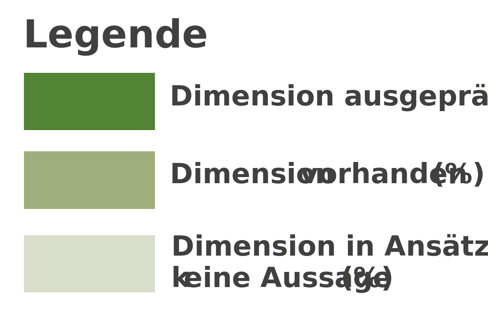

Technologische Radarboards - Gesamtprogramm
Dimensionen
Anzeige der Dimensionen. Der Farbcode
stellt die Schwerpunkte der Projekte in % dar.
Unterdimensionen
Anzeige der Unterdimensionen. Der Farbcode
stellt die Schwerpunkte der Projekte in % dar.
